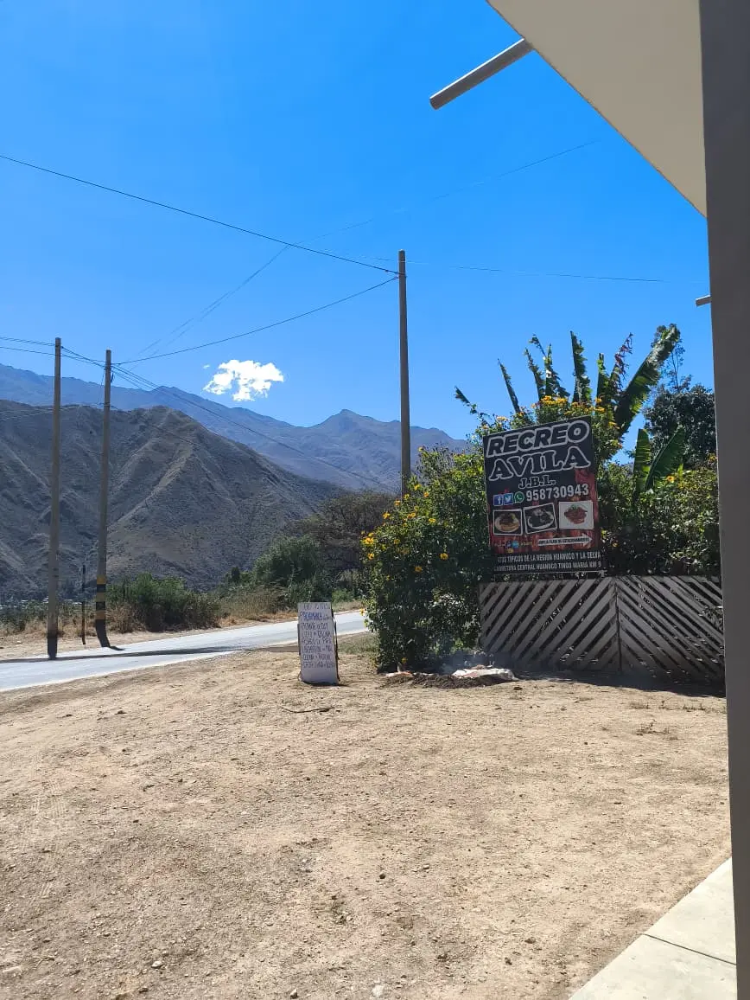
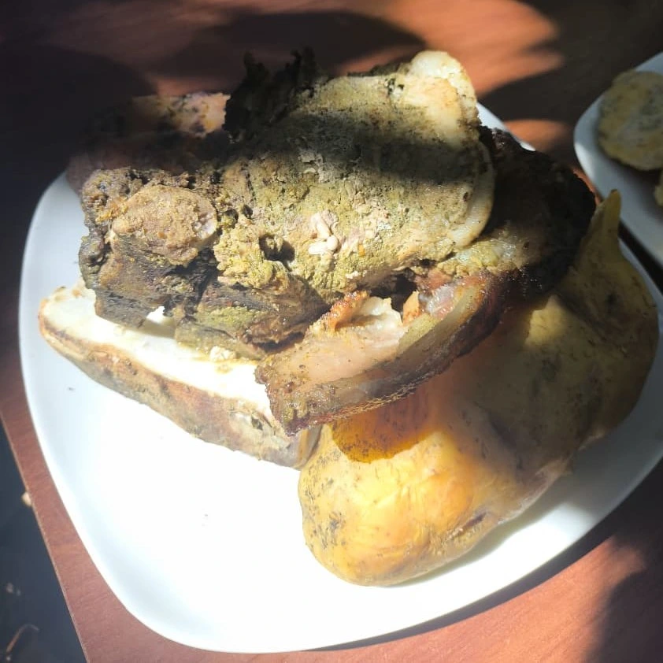
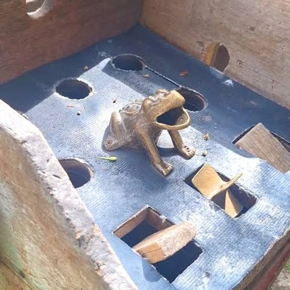
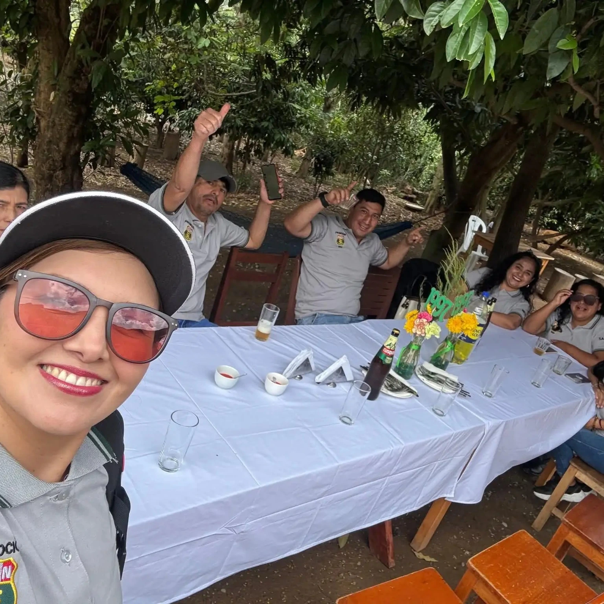
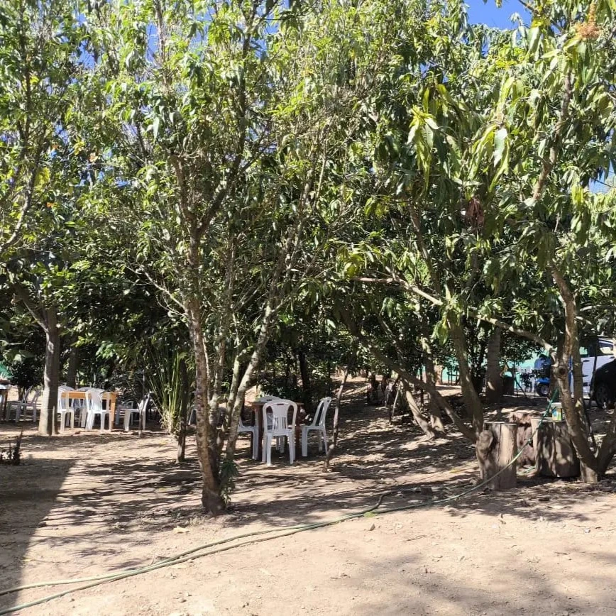
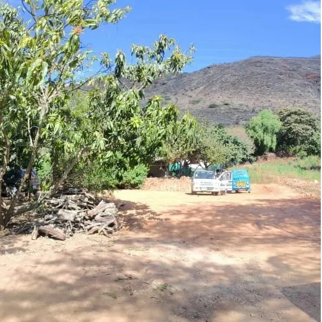

El Recreo Ávila JBL es tu destino familiar en el corazón de la Carretera Central Huánuco–Tingo María. Gastronomía regional auténtica, deportes y aire puro.

El Recreo Ávila JBL es un espacio de recreación familiar y gastronomía regional auténtica, enclavado en la Carretera Central a solo 9 kilómetros de Huánuco. Ofrecemos una experiencia campestre completa donde las familias pueden disfrutar de comida típica, actividades deportivas y el ambiente natural de nuestra región.
Entorno al aire libre rodeado de naturaleza, ideal para disfrutar con toda la familia.
Platos típicos de la región Huánuco preparados con ingredientes frescos y recetas tradicionales.
Cancha de vóley y juego del sapo para todos.
Espacios disponibles para reservas privadas, cumpleaños y reuniones familiares.
Todo lo que necesitas para un día perfecto al aire libre.

Platos típicos de la región Huánuco preparados con recetas auténticas. Desde pachamanca hasta cecina y platos criollos.
Comida típica
El clásico juego tradicional peruano disponible para toda la familia. ¡Diversión asegurada para todos!
Tradicional
Espacios para cumpleaños, reuniones familiares y eventos grupales. Coordinamos todo para tu celebración especial.
Eventos
Amplios espacios al aire libre para que los niños jueguen y las familias disfruten del ambiente campestre natural.
Recreación
Estacionamiento accesible con amplia capacidad. Fácil acceso desde la Carretera Central Huánuco–Tingo María.
ComodidadEstamos en la Carretera Central, fácil de encontrar y con estacionamiento propio.
Kilómetro 09, Carretera Central
Huánuco – Tingo María
Distrito de Amarilis, Huánuco – Perú
Domingos de 8:00 am a 6:00 pm
Aproximadamente 15–20 minutos en auto desde el centro de Huánuco
Combis y colectivos con dirección a Tingo María desde el centro de Huánuco. Bajar en el Km 09.
Desde el centro de Huánuco, tomar la Carretera Central con dirección a Tingo María.
Continuar aproximadamente 9 kilómetros hasta llegar al Km 09 (Distrito de Amarilis).
Buscar el letrero del Recreo Ávila JBL al costado de la carretera. Tiene estacionamiento propio.
¿Dudas? Llámanos al 958 730 943 y te guiamos hasta llegar.